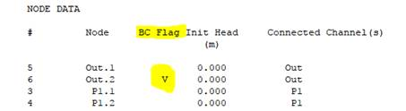

1.10 Pipe Networks
Pipe networks can be modelled using two different approaches, or a combination of these approaches:
- Detailed modelling by defining the physical features of the pipe network using 1d_nwk channels to represent pipes, 1d_pit or 1d_nwk nodes to represent pits, and 1d_mh nodes to represent manholes, as discussed within this Section.
- An approximate approach termed Virtual Pipes is also available if the pipe details are unknown though inlet and outlet information is available. A Virtual Pipe network can be modelled using 1d_pit or 1d_nwk nodes to represent inlets and outlets between which flow is instantaneously transferred or exits the model (i.e. no physical routing is calculated). Virtual pipes are discussed in Section 1.11.
Complete 1D pipe networks and Virtual pipe pits can coexist in the same model. From the 2020-10 release and onwards, in TUFLOW HPC, virtual pipe outputs can connect to, and discharge into, the upstream or downstream end of a channel.
TUFLOW 1D produces a true HGL, with all losses accounted for. Different methods are available to quantify the losses at junctions and manholes, with the default setting being the Englehund approach, which automatically adjusts losses every timestep according to the expansion/contraction of flow, and changes in pipe direction, slope, inverts, etc.
Note that care should be taken in interpreting the HGL profile as the water level output currently only supports one level, which is the level in the manhole chamber (ie. after expansion losses into the chamber have been accounted for, or after a free-overfalling pipe outlet discharges into the manhole). Especially where upstream controlled flow regimes occur (eg. free outflow), the profile may appear to intersect the pipe invert profile.
1.10.1 Pipes
Culverts within a pipe network are created by digitising lines within one or more 1d_nwk GIS layers and assigning a type C, R or I (refer to Section 1.7.1). The culverts are considered linked when the channel ends are snapped to one another or they are connected by a connector (“X” channel). Connectivity between the underground pipe with the surface above is defined using pits (see Section 1.10.2). Pipe junctions are referred to as manholes in TUFLOW terminology and can occur with or without pits (see Section 1.10.4). TUFLOW includes a range of energy dissipation options at junctions. These are also discussed in Section 1.10.4.
1.10.2 Pits
Pits are used for two purposes.
- In pipe network models (Section 1.10.1), pits transfer water between the 2D domain on the surface and a 1D pipe network
underground.
- In virtual pipe networks (Section 1.11), pits define inlet and outlet locations.
Pits are defined by digitising points within one or more 1d_pit or 1d_nwk layers. Of these two alternatives the 1d_pit layer is the most efficient option. It excludes superfluous attributes included in the 1d_nwk format that are required for other uses (such as 1D pipe or open channel details). Both options are described in the following sections.
The following notes apply to pits:
- For pits connected to a channel start or end (usually a pipe), either by snapping or via an “X” channel, or are within the Pit Search Distance, the pit calculations are carried out by ESTRY and it is assumed a pipe network is being modelled.
- Under this scenario TUFLOW/ESTRY will automatically create a short channel called a “pit channel” to connect the 2D domain (surface) to the underground 1D pipe network. The pit channel is computationally “zero length” and does not contribute to any storage in the system (noting that the Len_or_ANA attribute is used to specify the surface area or storage of the pit chamber).
- The pit inlet capacities curves are specified in a Pit Inlet Database (see Section 1.10.3) for “Q” type pits in Table 1.25.
- Under this scenario TUFLOW/ESTRY will automatically create a short channel called a “pit channel” to connect the 2D domain (surface) to the underground 1D pipe network. The pit channel is computationally “zero length” and does not contribute to any storage in the system (noting that the Len_or_ANA attribute is used to specify the surface area or storage of the pit chamber).
- Unconnected pits, (i.e. pits not snapped/connected to a channel end or within the Pit Search Distance of a channel end), or VPI and VPO pits, are used for virtual pipe modelling and the following logic applies:
- The virtual pipe pit inlet capacity curves are specified in a Pit Inlet Database (see Section 1.10.3) for a “VPI” or “Q” type pit in Table 1.26.
- VPI and VPO type pits are always treated as disconnected (i.e. virtual pipe inlets or outlets), even if snapped or within a Pit Search Distance.
- For Classic, all unconnected pits and VPI pits are treated as being connected to a virtual pipe. The pit’s discharge is extracted from the model on the assumption there are no backwater or surcharging effects at that pit. For example, free flow into the ocean. Note: VPO pits are not supported in Classic and will show zero flow.
- For HPC, all VPI and VPO discharges are calculated by the HPC solver as per the virtual pipe feature. For all other unconnected pits, their discharges are calculated by the TUFLOW 1D solver (ESTRY) in the same manner as for Classic above.
- For Classic, all unconnected pits and VPI pits are treated as being connected to a virtual pipe. The pit’s discharge is extracted from the model on the assumption there are no backwater or surcharging effects at that pit. For example, free flow into the ocean. Note: VPO pits are not supported in Classic and will show zero flow.
- The virtual pipe pit inlet capacity curves are specified in a Pit Inlet Database (see Section 1.10.3) for a “VPI” or “Q” type pit in Table 1.26.
- A CHECK 1626 message is issued for unconnected pits (excluding VPI and VPO pits), alerting the modeller to the possibility of a pit possibly
being inadvertently not snapped or within the Pit Search Distance. If all the pits should be connected (excluding VPI and VPO pits), the user can specify the .ecf command Pit No 1D Connection to force an ERROR 1626 in the case of a pit not being connected by snapping or within the
Pit Search Distance.
- If a pit cannot be connected to an overland 2D domain (because, for example, it does not fall on an active cell), a WARNING is issued and the pit channel will remain unconnected.
- In the various 1D output and the 1d_nwk check files, the pit channels that are snapped to a channel end are displayed as a small channel orientated in the north-south axis, not a node (point). The display length of the channel is, by default, set to 10 m, however, this can be changed using Pit Channel Offset. For pits connected using Pit Search Distance, the pit is displayed as extending from its connected node.
- Flow through unconnected pits will appear in the mass balance reporting as follows:
- Within the _MB2D.csv or _HPC.csv “As SX V In” and “Es SX V Out” SX in and out flow columns.
- For unconnected pits calculated by ESTRY the discharge exiting the model is included in the _MB1d.csv or _MB.csv “H Vol Out” column.
- For HPC VPI and VPO pits the volumes exiting or entering the model are included in the SX Volumes.
- Within the _MB2D.csv or _HPC.csv “As SX V In” and “Es SX V Out” SX in and out flow columns.
- The downstream node of an unconnected pit channel will have a boundary type “V” in the .eof file as shown below.
 - For an unconnected pit, which must have an ID, the upstream and downstream nodes are assigned .1 and .2 extensions respectively.
- If a connected pit’s node ID is left blank the pit channel ID is given a “.P” extension based on the pit node’s automatically assigned ID (see Section 1.12). The upstream (ground) node ID of the pit channel is given the pit channel’s ID with a “.0” extension.
- Minimum NA Pit sets the minimum NA (Nodal Area) of the upstream (ground) nodes for all pit channels. This command was introduced to differentiate upstream pit channel nodes from the Minimum NA setting.
1.10.2.1 1d_nwk Pits
Pits are created by digitising points within one or more 1d_nwk GIS layers and setting the “Type” attribute to C, Q, R or W (refer to Table 1.30). Table 1.25 describes the 1d_nwk attributes required for pits defined in the 1d_nwk format.
| No. | Default GIS Attribute Name | Description | Type |
|---|---|---|---|
| 1 | ID |
Unique identifier up to 12 characters in length. For pits connected to a 1d_nwk channel, either by being snapped or connected using Pit Search Distance, if ID is blank the pit channel’s ID is automatically assigned based on one of the connecting channel IDs. For pits not connected to a channel, ID cannot be blank and must be unique. ID may contain any character except for quotes and commas. As a general rule, spaces and special characters (e.g. “\”) should be avoided, although they are accepted. The same ID can be used for a channel and a node, but no two nodes and no two channels can have the same ID. |
Char(12) |
| 2 | Type | Used to specify a Pit Channel as one of C, Q, R or W as per Table 1.30. | Char(4) |
| 3 | Ignore | If a “T”, “t”, “Y” or “y” is specified, the object will be ignored (T for True and Y for Yes). Any other entry, including a blank field, will treat the object as active. | Char(1) |
| 4 |
UCS (Use Channel Storage at nodes). |
Not used. | Char(1) |
| 5 | Len_or_ANA |
Adds the value specified as additional nodal area (surface area in m2). If no nodal area data exists for the node, either via the UCS attribute from the connected 1d_nwk channels, or via a NA table, TUFLOW automatically creates an NA table of constant surface area. If a negative value is specified, this value is used as a multiplier of the node storage. For example, a value of -1.5 increases the nodal storage table (NA table) by 50% (or to reduce storage use a value between -1 and 0). Increasing storage can be useful to stabilise problematic 1D nodes, provided that the added storage does not adversely distort the results. This multiplication is applied after any effect of Minimum Channel Storage Length. Minimum NA is applied after the multiplication. |
Float |
| 6 | n_nF_Cd | Not used. | Float |
| 7 | US_Invert |
Used to specify the ground elevation of the pit. This is used to set the upstream and downstream elevation of the pit channel. If set to -99999, the ground elevation is set to the ZC elevation of the 2D cell that the pit falls within, or the lowest elevation sampled if using SGS (provided there is a 2D SX connection – see Conn_1D_2D attribute below). If Conn_1D_2D is set to “SXL”, US_Invert is used as the amount by which to lower the 2D cell and the pit channel invert is set to this level. |
Float |
| 8 | DS_Invert | The bottom elevation of the pit. Can also be used to set the upstream and downstream inverts of connected channels – see discussion for US_Invert for channels above. If set to -99999, not used. | Float |
| 9 | Form_Loss | The Form_Loss value is applied as an energy loss to all outgoing culverts (i.e. culverts that are digitised as leaving the pit/node), so the Form_Loss value should be based on the outgoing pipe velocity (e.g. the K values). Note, it may be necessary to zero or reduce the Entry_Loss and/or Exit_Loss attributes of culverts connected to the pit/node so that duplication of losses does not occur. This loss coefficient is not adjusted according to the approach and departure velocities as documented in Section 1.7.7. | Float |
| 10 | pBlockage | The percentage blockage (%) of the pits. Reduces the flow capacity through the pit by the specified amount. | Float |
| 11 | Inlet_Type | For Q pit channels, the name of a pit inlet type in the Pit Inlet Database (see Section 1.10.3). Otherwise not used. | Char(256) |
| 12 | Conn_1D_2D |
Used to specify a “SX” flag that automatically creates a 2D SX cell and 1D/2D connection where the 1D pit occurs. This negates the need to create SX objects in a 2d_bc layer. The following options/changes are available:
|
Char(4) |
| 13 | Conn_No |
If “SX” is specified for Conn_1D_2D, can be used to control the number of 2D cells connected. See Section 1.10.2.3 for a discussion on how the 2D cells are selected.
|
Integer |
|
14 |
Width_or_Dia |
C, R, W Pit Type: Q Pit Type: |
Float |
|
15 |
Height_or_WF |
Sets the height of an R pit inlet channel. Not used for other pit types. |
Float |
|
16 |
Number_of |
C, R, W Pit Type: Used as a multiplier of the flow derived from the depth-discharge curve. For example, if Number_of equals 3, this assumes there are three pits lumped together and the flow is tripled. If set to zero (0) a value of 1 is used (i.e. a single inlet pit is assumed). Multiplies the flow only, additional storage defined by the Len_or_ANA attribute is not multiplied. Where a pit is connected to a manhole, increasing the Number_of attribute will not increase the number of manholes, or its dimensions; the pits remain connected to only one manhole. |
Integer |
| 17 | HConF_or_WC | R Pit Type: Sets the height contraction coefficient, otherwise not used for other pit types. Usually 0.6 for square edged entrances to 0.8 for rounded edges. If value exceeds 1.0 or is less than or equal to zero, it is set to 0.6. | Float |
| 18 | WConF_or_WEx | C, R Pit Type: Sets the width contraction coefficient, otherwise not used for other pit types. Usually 0.9 for sharp edges to 1.0 for rounded edges for R culverts. Normally set to 1.0 for C pits. If value exceeds 1.0 or is less than or equal to zero, it is set to 1.0 for C and 0.9 for R pits. | Float |
| 19 | EntryC_or_WSa | C, R Pit Type: Sets the entry loss coefficient, otherwise not used for other pit types. | Float |
| 20 | ExitC_or_WSb | C, R Pit Type: Sets the exit loss coefficient, otherwise not used for other pit types. | Float |
1.10.2.2 1d_pit Pits
The 1d_pit layer can be used for all types of pits in Classic and HPC, whether connected to a 1d_nwk or a virtual pipe system. Table 1.26 presents the attributes associated with 1d_pit GIS layer. The 1d_pits attribute table excludes superfluous attributes included in the 1d_nwk format that are required for other uses (e.g. pipes and open channels).
Models using 1d_pit pits are provided in the 1D Pipe Network / 2D Floodplain Modelling Example Model Dataset on the TUFLOW Wiki.
| No. | Default GIS Attribute Name | Description | Type |
|---|---|---|---|
| 1 | ID |
Unique identifier up to 12 characters in length. For pits that connect to a 1d_nwk channel, either by being snapped or connected using Pit Search Distance, if ID is blank the pit channel’s ID is automatically assigned based on one of the connecting channel IDs. Note VPI and VPO pits are never connected to a 1d_nwk channel, and they always require unique IDs. For any pit not connected to a channel, ID cannot be blank and must be a unique (channel) ID. ID may contain any character except for quotes and commas. Generally, spaces and special characters (e.g. “\”) should be avoided, although they are accepted. The same ID can be used for a pit (which is converted to a channel) and a node, but no two nodes and no two channels can have the same ID. |
Char (12) |
| 2 | Type |
“VPI” or “I” (Virtual Pipe Inlet): “VPO” or “O” (Virtual Pipe Outlet): As of Build 2018-03-AA, the standard C, Q, R and W pits can be specified via a 1d_pit layer, and can be connected, or disconnected, to a 1d_nwk. If a C, Q, R or W pit is not connected to a 1d_nwk channel, either by snapping or using Pit Search Distance, the discharge through the pit is permanently extracted from the 2D domain. Alternatively, unconnected C, Q, R or W pits can be treated as an ERROR. For C, R and W pits, the default width, contraction and weir coefficients are used – to vary from these use a 1d_nwk layer for the pits. |
Char (4) |
| 3 | VP_Network_ID | VP_Network ID (as an integer) used to determine which outlet(s) the flow into the inlet pits discharges from (if any). Separate or independent networks should have a different network ID. VP_Network_ID should be a positive integer as some negative integer numbers are reserved for special purposes. |
(Positive) Integer |
| 4 | Inlet_Type | For a VPI or Q pit, the name of a pit inlet type in the Pit Inlet Database (see Section 1.10.2). Not used for other pits. | Char (32) |
| 5 | VP_Sur_Index |
Only used for VPI pits if using the HPC solver (not used by the Classic solver). If the total flow into the VPIs on the same VP_Network_ID exceeds the maximum outflow capacity of the VPOs of that VP_Network_ID (see Qmax below), one or more of the VPI flow rates must be modified. The surcharge index is used to determine how VPI flows are adjusted. The VPIs with the lowest surcharge index are given priority. When the total inflow of all VPIs exceeds the total capacity of all VPOs for a VP_Network_ID, the VPI inflow with the lowest surcharge index is reduced. If this VPI’s inflow is reduced to zero, this VPI is permitted to become an outlet (i.e. surcharge) with the flow rate up to but not exceeding its maximum outflow (see QMax below). If the total inflow of all remaining VPIs exceeds the maximum outflow plus the maximum outflow of this VPI, then the VPI with the next highest surcharge index is adjusted using the same methodology. To prevent a VPI from surcharging, set QMax to zero. For example, the ground level at the VPI could be used for the surcharge index, in which case the lowest VPIs surcharge first. However, if you have reliable data for the order in which they tend to surcharge this could be used. The virtual pipe network is flow conserving, but not necessarily energy conserving. The highest VPI could be incorrectly specified with the lowest surcharge index in which case water would be flowing uphill! VPI for the Classic solver: Not used. VPO, C, Q and W: Not used. |
Float |
| 6 | VP_QMax |
VPI and VPO if using the HPC solver: If the total flow capacity (sum of QMax values for VPOs on the same VP_Network_ID) of the VPOs is reached, the inflow to VPIs is restricted and/or surcharged at the VPIs using VP_Sur_Index value above. R pits: Sets the height of the pit section in the vertical plane. VPI and VPO for the Classic solver: Not used. C, Q and W: Not used. |
Float |
| 7 | Width |
For C pits the diameter of the pit inlet cross-section in the vertical plane. For R and W pits, the width of the pit inlet section in the vertical plane. For Q and VPI pits the multiplier of width in Pit Inlet Database. For all pits the width is also used to determine the number of 2D cells to connect. |
Float |
| 8 | Conn_2D |
Used to control the connection type. For pits this field must be blank or set to “SX”. If set to blank, is treated as a SX connection. Other options may be provided in the future. |
Char (8) |
| 9 | Conn_No |
Overwrite the automatically determined number of connected 2D cells (see Width attribute above).
|
Integer |
| 10 | pBlockage | The percentage blockage (%) of the pits. Reduces the flow capacity through the pit by the specified amount. For VPI and VPO pits this feature was introduced for Build 2016-03-AB, and for C, Q, R and W pits it was introduced for Build 2018-03-AA. Prior to these builds the pBlockage attribute was reserved and not used. | Float |
| 11 | Number_of | Number of (same type of) pits represented by the pit channel. This optional attribute was introduced for Build 2018-03-AA. This value will also affect the width value used to determine how many 2D cells to connect to. For example, a value of 2 will double the connection width. | Integer |
| 12 | Lag_Approach |
Sets the lag approach, as described in Section 1.11:
|
Char (8) |
| 13 | Lag_Value | Lag value in hours. This optional attribute was introduced for Build 2023-03-AB. | Float |
1.10.2.3 Connecting Pits and Nodes to 2D Domains
Both pits and nodes can be automatically connected to 2D domains using the 1d_nwk Conn_1D_2D attribute (see Table 1.26 and Table 1.25). If Conn_1D_2D is set to “SX”, TUFLOW automatically connects the upstream end of the pit channel or node to the 2D domain. The 2D cell must be active (Code = 1). If no active 2D cells are found a WARNING 2122 or 2123 is issued. For Classic M2D models WARNING 2037 is given if there is overlapping 2D domains and more than one 2D cell is active.
The command Pit Default 2D Connection can be used to set the global default value for the 1d_nwk Conn_1D_2D attribute.
By default TUFLOW will connect the 1D pit channel or node to one or more 2D cells at pit connections. The number of 2D cells selected is a function of the flow (connection) width of the pit inlet (including the effects of the Number_of and Width_or_Dia 1d_nwk attributes), or the total flow width of the channels connected to the node. The total width of the 2D cells selected is always more than the pit inlet width or width of channels. For example, a width of 3.6m on a 2m grid selects two cells. The advantage of selecting more than one 2D cell is to provide enhanced stability at the 1D/2D connection when the 1D flow width exceeds the 2D cell size. The number of 2D connection cells is limited to 10 per pit inlet.
The 1d_nwk Conn_No attribute can be used to change the number of 2D cells connected as follows.
- A positive value adds that number of 2D cells to the automatic number. In the example above, if Conn_No is set to 1, three (2 + 1) 2D cells are connected. The upper limit is 10 connected cells.
- If Conn_No is negative, this ignores the automatic approach and fixes the number of 2D cells connected to the absolute value of Conn_No. For example, a value of -1 would only connect the pit or node to one (1) 2D cell irrespective of the connection width.
If more than one 2D cell is being connected, there are two approaches available for how the 2D cells are selected.
- For pits, the default is the G (on Grade) option that selects the 2nd, 3rd, etc… cells by traversing to the next highest 2D cell that neighbours the 2D cell(s) already selected (this includes diagonal cells, i.e. all 8 cells around a cell are considered). These cells are also automatically lowered to the same height as the first cell so that their ZC value is at or below the pit inlet.
- For nodes, the default is the S (Sag) option that selects the 2nd, 3rd, etc… cells by traversing to the next lowest 2D cell. The ZC values of these cells are not changed as they are already at or below the node invert.
- The above approaches can be changed using the G (Grade) and S (Sag) flags for the 1d_nwk Conn_1D_2D attribute. The G approach is that adopted by default for pits and S for nodes. To override the default approach, specify G or S as appropriate. For example, if the S approach is preferred for a pit that is draining a depression, specify an S flag for the Conn_1D_2D attribute (i.e. “SXS”). Note SX must come first before an optional flag is specified.
- Note: If Defaults
== PRE 2008-08 is specified, the original approach of only selecting one 2D cell is used, irrespective of the Conn_1D_2D and Conn_No values. - If using SGS, the on Grade and Sag approaches are applied based on the minimum SGS elevations of the cells.
Note that the conventional approach of using 2d_bc SX points or lines can still be used to connect 1D channel ends. This gives the user complete control over which 2D cells are selected and is often preferred in situations where large 1D structures are being connected to 2D cells.
1.10.3 Pit Inlet and Depth/Stage vs Discharge Databases
Pit channels can be specified as a Q Type, where flow through the pit is controlled by a depth-discharge curve defined within the Pit Inlet Database. The database is similar to the BC Database and is described below. The alternative naming convention Depth Discharge Database performs the exact same function and can be used instead of Pit Inlet Database. Only a single Depth Discharge or Pit Inlet Database should be used.
The database is a .csv file usually set up and managed in a Microsoft Excel spreadsheet. The database file sources depth-discharge curves in other .csv files that are also usually set up and managed within the same Excel spreadsheet. The TUFLOW Microsoft Excel macro can be used to export these csv files from the parent spreadsheet. It is available to download at no cost from www.tuflow.com. The format of the Pit Inlet Database is described in Table 1.27.
| Column No. | Description |
|---|---|
| 1 | Contains the pit inlet type as referenced by the 1d_nwk Inlet_Type attribute (see Table 1.25). |
| 2 | Contains the name of the source .csv file that contains the depth-discharge curve. |
| 3 | The heading label of the column containing depth within the source .csv file. |
| 4 | The heading label of the column containing flow within the source .csv file. |
| 5 | The pit inlet’s nominated full flow area in m2 . Note that the flow area is only used to output a velocity for the pit channel (i.e. it does not have any influence over the hydraulic calculations). |
| 6 |
The pit inlet’s nominated flow width in m. The width is used for the automatic selection of 2D cells when connecting to a 2D domain (see Section 1.10.2.3) and for extending the depth discharge curve. Note: When width is set in 1d_nwk or 1d_pit layer for Q and VPI pits the width will multiply width in the Pit Inlet Database. |
Figure 1.14 shows an example of a Pit Inlet Database .csv file. For the example, if the 1d_nwk Inlet_Type attribute is set to “M”, TUFLOW searches the first column (Name) until it finds “M” as highlighted in green in the image below. The source .csv file, pit_inlet_curves.csv is opened and the occurrence of the labels “Depth” (shaded yellow) and “Type M” (orange) on the same line in pit_inlet_curves.csv are searched for. The numeric values for these two columns, as shown in the second image below in yellow and orange, are read and applied as the depth-discharge relationship for the Q pit channel.


Figure 1.14: Example of Pit Inlet Database
The depth-discharge curve is applied and extrapolated as follows:
- The first coordinate on the curve must be 0, 0 (i.e. zero flow at zero depth).
- The depth and flow must be in metres and m3/s or feet and ft3/s if using
Units == US Customary . - The depth and flow data entries should be specified as positive values.
- The depth value used to derive the discharge through the pit channel is taken as the water level in the 2D domain less the pit invert (usually the ground/2D level). If the downstream water level of the pit channel rises above the pit invert, the depth value used for deriving the pit channel flow is the difference in water level. This provides a smooth transition from upstream controlled flow to drowned flow. If the pit channel starts to be surcharged (i.e. flow is reversed), the flow is extracted from the depth-discharge curve using the downstream water level less the upstream water level (pit invert if dry) as the depth value, and is applied as a negative discharge so that flow surcharges from the pipe network onto the 2D domain.
- If required the curve is extrapolated. An “effective” flow width of the pit inlet is calculated that gives the same flow at the top of the curve as would orifice flow. The orifice flow equation is then used to extend the curve indefinitely, using the equation:
\[\begin{equation} Q = 0.6\frac{2}{3}y_{top}w_{effective}\ \sqrt{2g(y - 0.6\ \frac{2}{3}\ y_{top)}} \tag{1.22} \end{equation}\]
Table 1.28 presents the different Q pit flow regimes. These are output to the .eof file next to the velocity and flow values, and to the _TSF and _TSL output layers (see Sections ?? and ??).
Models using Pit Inlet Database are provided in the 1D Pipe Network / 2D Floodplain Modelling Example Model Dataset on the TUFLOW Wiki.
| Regime | Description |
|---|---|
| N | The depth-discharge point is within the bounds of the Q pit curve provided. |
| O | The depth is over (exceeds) the highest depth in the Q pit curve and the extrapolated orifice flow equation is being used. |
| R | Reverse (negative) flow is occurring. |
1.10.3.1 Road Crossfall Options
The command Pit Default Road Crossfall increases the depth at Q pits based on the crossfall slope of the road cross-section. This approach aims to account for changes in ground elevation that occur at a finer scale than the 2D cell resolution. TUFLOW calculates the water depth that is used by the Pit Inlet Database using an adjacent side triangle depth approach, instead of the actual cell flow depth. This is shown in Figure 1.15. The resulting triangle has the same area as the vertical flow area in the 2D cell the pit is connected to (i.e. the triangle’s area is the depth in the 2D cell times the width of the cell).

Figure 1.15: Road Crossfall Option
Use of this command can improve the ability to capture water from 2D cells into pits feeding the pipe network. Especially for larger cell sizes, the shallow depth that can occur in the cell can be unrepresentative of the depth at the entrance to the pit, and restricting the amount of flow entering the pit. The larger depth using an equivalent triangle will push more water into the pit providing a more realistic representation of the pit’s capture.
Note: If using the Sub-Grid Sampling (SGS), and the underlying DEM has good representation of the road cross-profile, this feature is not needed and should not be used.
1.10.4 Manholes
Manholes are used at pipe junctions for maintenance access and where there is a change in pipe configuration and/or inlet pit flow entry. Flow energy is dissipated due to:
- Expansion/contraction of flow within the manhole chamber and outlet culverts, see Figure 1.16.
- Change in direction of the culverts (e.g. at a bend), see Figure 1.17.
- Change in height and/or invert level of the adjoining culverts, see Figure 1.18.

Figure 1.16: Flow Expansion/Contraction at a Manhole

Figure 1.17: Change in Flow Direction at a Manhole

Figure 1.18: Change in Inlet/Outlet Height at a Manhole
The presence of a manhole will override the exit loss of any culvert discharging into the manhole and the entrance loss of any culvert taking flow out of the manhole. The corresponding Entry_Loss and Exit_Loss attributes of the culverts in the 1d_nwk layer are not used (see Section 1.10.4.4 and the notes on these attributes in Table 1.5 for more information).
There are three different types of manholes:
- “C” for circular chambers.
- “R” for rectangular chambers.
- “J” for culvert junctions without a chamber.
And three different energy loss approaches:
- “NO” no special manhole losses (the standard entry/exit losses of the connected culverts apply).
- “EN” for the Engelund loss approach (this is the default approach).
- “FX” for the Fixed loss approach.
The manhole loss approach can be selected globally using the command, Manhole Default Loss Approach.
The manhole types, loss methods and dimensions are output in the _mhc_check file.
1.10.4.1 Automatically Assigned Manholes
By default, manholes are automatically created at all culvert junctions (nodes) where the following conditions are met.
- There is at least one incoming and one outgoing culvert – a culvert is a C, I or R channel.
- There are no open channels connected (i.e. no bridges, weirs or any other channel that is not a culvert/pipe).
- Pit channels can be connected, but are not included in any of the calculations for determining manhole energy losses. Note, however, that the connection of a pit to a manhole (or multiple pits via the Number_of 1d_nwk pits attribute) may influence the default Engelund losses indirectly via the introduction of additional flow to the pipe network.
Three different approaches to the sizing of automatic manholes and the application of losses are available through the .ecf command Manhole Approach. The current default is Method C. This is the preferred approach unless backward compatibility is required for legacy reasons. Further details on Methods A and B may be found by referring to the 2018 Manual, Release Notes of previous TUFLOW builds, or by contacting support@tuflow.com.
The type of manhole assigned is set using Manhole Default Type. If Manhole Default Type is not specified the default is to assign a C, R or J types based on the size and configuration of culverts connected to the manhole (see Manhole Default Type for more information).
The minimum diameter/width of a manhole chamber is controlled by Manhole Minimum Dimension, and the default side clearance and clearance between culverts is set using Manhole Default Side Clearance.
The default energy loss approach is controlled by Manhole Default Loss Approach.
1.10.4.2 Manually Assigned Manholes (1d_mh Layer)
Manholes are manually assigned at channel ends (nodes) using a 1d_mh layer and Read GIS Manhole. Any number of 1d_mh layers can be specified. The attributes of a 1d_mh layer are described below in Table 1.29.
A manhole in a 1d_mh layer will override any automatically created manhole. If a manually specified manhole occurs at the same location more than once, the last occurrence will prevail (i.e. the last manhole at a node will override any previously specified manholes at the same node).
To remove an automatically created manhole, digitise a point at the node in a 1d_mh layer and set the Loss_Approach to “NO” (i.e. no manhole energy losses). Note that culvert inlet/outlet losses will apply instead in accordance with Section 1.7.1.
Models using manually assigned manholes are provided in the 1D Pipe Network / 2D Floodplain Modelling Example Model Dataset on the TUFLOW Wiki.
| No. | Default GIS Attribute Name | Description | Type |
|---|---|---|---|
| 1 | ID | Unique identifier up to 12 characters in length (see ID for 1d_nwk layers). The ID is used to label the node that is created at the location of the manhole. If left blank, then the ID will be automatically assigned according to the rules for an automatically created node as discussed in Section 1.12. | Char(12) |
| 2 | Type |
“C” for circular shaped chamber. “J” for a junction, but no manhole chamber. “R” for rectangular shaped. If left blank, the global default type set by Manhole Default Type is used. |
Char(4) |
| 3 | Loss_Approach |
“NO” for no manhole loss approach (the standard entry/exit losses of the connected culverts apply). “EN” for the Engelund loss approach. “FX” for the Fixed loss approach. If left blank, the global default type set by Manhole Default Loss Approach is used. |
Char(4) |
| 4 | Ignore | If set to true (i.e. “T”), the manhole is ignored and makes no contribution to the final network. Otherwise set to “F”. | Char(1) |
| 5 | Invert_Level | The bottom or bed elevation of the manhole. This attribute is also used to set the upstream and downstream inverts of connected culverts if the culverts have not been assigned an invert. If set to -99999, not used. | Float |
| 6 | Flow_Width | The flow width in metres of the manhole (i.e. the width of the manhole perpendicular to the dominant direction of flow). For a C manhole this would be the diameter. Used to calculate the manhole flow area and velocity through the manhole. | Float |
| 7 | Flow_Length | The flow length in metres of the manhole (i.e. the length of the manhole in the dominant direction of flow). For a C manhole this attribute is not used and the diameter (Flow_Width attribute) is used. Only used to calculate the storage of the node at the manhole. | Float |
| 8 | ANA |
Additional storage surface area in m2 for the node at the manhole. Usually set to zero. |
Float |
| 9 | K_fixed | Fixed component of the calculated manhole loss coefficient. If using the Fixed approach, this is the only coefficient applied. | Float |
| 10 | Km |
Manhole exit coefficient used by the Engelund approach. If set to zero (0), for C manholes the Manhole Default C Exit Coefficient is applied, and for R manholes Manhole Default R Exit Coefficient is used. |
Float |
| 11 | K_Bend_Max |
The upper limit of the combination of KƟ and Kdrop in the Engelund approach. If set to zero (0), Manhole K Maximum Bend/Drop is applied. |
Float |
| 12 | C_reserved | Reserved for future use – leave blank. | Char(12) |
| 13 | N1_reserved | Reserved for future use – leave as zero (0). | Float |
| 14 | N2_reserved | Reserved for future use – leave as zero (0). | Float |
| 14 | N3_reserved | Reserved for future use – leave as zero (0). | Float |
1.10.4.3 Digitising Culverts Connected to Manholes
During the simulation, a culvert is determined to be an inlet or outlet culvert based on the flow direction, not the digitised direction of the 1d_nwk object. If reverse flow occurs this is taken into account in determining the appropriate loss coefficients. However, the pre-processing of the model assumes that the culverts have been digitised in the predominant direction of flow. A variety of checks are made such as whether both an inlet and an outlet culvert are connected to a manhole, and ERRORs or WARNINGs and CHECKs are issued if there is an incompatibility. It is strongly recommended that the culverts are digitised consistently in the downstream direction (i.e. from upstream to downstream).
1.10.4.4 Engelund Manhole Loss Approach
The Engelund energy loss approach at manholes is based on the work of F.A. Engelund, and used by the MOUSE software (DHI, 2009). The adopted approach has been further enhanced through advice from, and discussions with, staff from Technical Services Branch of the Gold Coast City Council, Queensland, Australia. This is the default manhole loss approach.
The Engelund approach provides an automatic method for determining the energy loss coefficients presented below. Of note is that the coefficients are recalculated every timestep, and vary depending on the flow distribution between inlet and outlet culverts and the depth of water within the manhole. The calculated values are output to the _TSL layer so they can be reviewed/checked over time.
Figure 1.19: Engelund Energy Loss Approach at Manholes
- Kentry covers the expansion of flow within the manhole at the outlet of an inlet culvert. The coefficient overrides the exit loss of the inlet culvert. Its time varying value is shown as the third value for inlet culvert in the _TSL output layer.
- KƟ represents the losses due to a change in direction (i.e. a bend) between inlet and outlet culverts. KƟ is based on the angle of the digitised lines of the culverts. For the inlet culvert the last two vertices of the line are used and for the outlet culvert the first two vertices. If the culvert line is digitised so that it has an unrepresentative first/last segment angle (this may occur where two parallel culverts have been digitised apart to make it easier to visualise), a 1d_nwk connector (X Type) can be used to connect the start/end of the culvert to the node, so that the first/last segment is a correct representation of the culvert angle relative to the other culverts. Refer to Section 1.8.3 for further information.
- Kdrop is the loss coefficient due to a change in invert level and culvert height between inlet and outlet culverts.
- KƟ and Kdrop are added and applied as an energy loss for each outlet culvert. The calculated value is reported as the middle value for outlet culverts in the _TSL output layer. Any Form_Loss value assigned to the outlet culvert via the 1d_nwk layer is also applied and will also be included in the _TSL middle value.
- Kexit covers the contraction from the manhole and re-expansion of flow within the entrance of an outlet culvert. It overrides the entrance loss of the outlet culvert and is the first value for outlet culverts in the _TSL output layer.
- Km is the manhole exit coefficient used to calculate Kexit. The default value for Km is dependent on whether the manhole is of a C or R type, and is set using Manhole Default C Exit Coefficient or Manhole Default R Exit Coefficient.
The equations used for the Engelund loss approach are provided below.
\[\begin{equation} V_m = \frac{Q_{om}}{A_m} \tag{1.23} \end{equation}\] \[\begin{equation} Q_f = min\left( \frac{Q_{p}}{Q_{om}},1.0 \right) \tag{1.24} \end{equation}\] \[\begin{equation} {A^{'}}_{m} = \frac{W_{m}y_{m}Q_{om}}{Q_{im}} \tag{1.25} \end{equation}\] \[\begin{equation} K_{entry} = \left\lbrack 1 - min\left( \frac{V_{m}}{V_{p}},1 \right) \right\rbrack^{2} \:\:\: \text{(applied as an exit loss on the inlet culvert)} \tag{1.26} \end{equation}\] \[\begin{equation} K_{\theta} = \sum_{inletpipes}^{}\left\lbrack Q_{f}\min\left( \frac{\theta^{2}}{90^{2}},\ 4\right)\right\rbrack \tag{1.27} \end{equation}\] \[\begin{equation} K_{drop} = \sum_{inletpipes}^{}\left\lbrack \min\left( \max\left( \frac{Q_{f}(h_{o} - h_{i})(h_{o} + y_{o} - h_{i} - y_{i})}{y_{o}y_{i}},0 \right),2 \right) \right\rbrack \tag{1.28} \end{equation}\] \[\begin{equation} K_{exit} = K_{m}\left[ 1 - min\left( \frac{A_{p}}{{A^{'}}_{m}},1 \right) \right] \:\:\: \text{(applied as inlet loss on the outlet culvert)} \tag{1.29} \end{equation}\] \[\begin{equation} K_{outlet\ pipe} = \min\left( K_{\theta} + K_{drop},K_{Bend\_Max} \right) + K_{b} + K_{f} \:\:\: \text{(applied as loss using outlet culvert velocity)} \tag{1.30} \end{equation}\]
Where:
- \(Q_{p}\) = Flow in culvert
- \(Q_{im}\) = Total flow in to manhole
- \(Q_{om}\) = Total flow out of manhole
- \(y_{i}\) = Height of inlet culvert
- \(y_{o}\) = Height of outlet culvert
- \(h_{i}\) = Inlet culvert invert
- \(h_{o}\) = Outlet culvert invert
- \(\theta\) = Angle in degrees of inlet culvert relative to outlet culvert
- (\(\theta = 0{^\circ}\) when the culverts are in line, \(\theta = 90{^\circ}\) when the outlet culvert is at right angles)
- \(Q_{p}\) = Flow in outlet culvert
- \(W_{m}\) = Flow width in manhole = 1d_mh width attribute
- \(y_{m}\) = Depth of water in manhole
- \(A_{m}\) = Flow area in manhole
- \(A_{m}^{'}\) = Effective flow area in manhole
- \(A_{p}\) = Flow area of culvert
- \(K_{m}\) = Km 1d_mh attribute
- \(K_{b}\) = Bend loss coefficient (1d_nwk Form_Loss attribute)
- \(K_{f}\) = Fixed loss (1d_mh K_Fixed attribute)
- \(K_{Bend\_ Max}\) = Upper limit to sum of \(K_{\theta}\) and \(K_{drop}\) (1d_mh K_Bend_Max attribute)
1.10.4.5 Fixed Manhole Loss Approach
The Fixed loss approach applies the 1d_mh K_fixed coefficient as an energy loss on the outlet culvert(s). This is in accordance with publications that quote K values for different manholes based on the velocity in the outlet culvert.
The energy loss is applied as an inlet loss to the outlet culvert if K_fixed is 0.5 or less. If K_fixed exceeds 0.5, 0.5 is applied as an inlet loss, and the remainder is applied as a form or bend loss. The inlet loss component is shown as the first value in the _TSL output layer, and any remainder as the second (middle) value. Any Form_Loss value assigned to the outlet culvert via the 1d_nwk layer is also applied and will be included in the _TSL middle value.
By default, K_fixed is set to zero. To assign a K_fixed value to any manhole using the Fixed loss approach will require using a 1d_mh layer.
Note that K_fixed is also used by the Engelund loss approach as an additional (calibration) energy loss if required.
1.10.4.6 Discussion on Approaches to Modelling Pipe Junction Losses
The approach taken to modelling junctions and manhole losses affects the pipe network’s energy losses and overland flood levels, especially if a large proportion of the flow is within the pipe network. As a general guide, the following approaches available in TUFLOW will produce the following outcomes:
- Ideal Scenario: If you are fortunate to have the details and budget to include manholes using 1d_mh layers, this will produce the most reliable results. Either the Engelund approach or application of fixed losses based on guidance within the literature, or a combination of these, is recommended. However, in the absence of manhole details, one of the following approaches, or a combination, needs to be adopted.
- Least Conservative (flatter hydraulic grade lines along pipes with lower flood levels overall): No manholes (Manholes at All Culvert Junctions is set to “OFF” and no 1d_mh layers are specified) and adjustment of structure losses (the default) applies. In this case there will be minor losses at pipe junctions, because the Structure Losses by default will adjust the entrance and exit losses at pipe connections down according to the approach/departure velocities (see equations in Section 1.7.7). As the velocities are usually similar from one pipe to the next the entrance and exit losses are reduced downwards, often close to zero (as would be expected for a junction of two pipes with no manhole, no change in direction and no change in invert level).
- Middle Ground: Automatically create and size manholes and apply the Engelund approach (the default setting). The automatic creation of manholes may be slightly conservative as a manhole (including junctions) is created at every closed node (a closed node occurs where only culverts/pipes and pits are connected). If there are many short pipes in the network an excess of manholes may result in causing greater energy losses. However, if single very long culvert channels are used to represent lengths of same sized pipes, any manholes along the long pipes will not be modelled and losses will be underestimated. In this case it is generally good practice to split the long culvert channels into several channels (this will also produce an improved hydraulic grade line along the pipe).
- Most Conservative (steeper hydraulic grade lines along pipes with higher flood levels overall): No manholes (Manholes at All Culvert Junctions set to “OFF” and no 1d_mh layers specified); fixed structure losses on all culverts (Structure Losses set to “FIX” is specified or 1d_nwk “F” flag is used); and the entrance and exit loss coefficients are not adjusted. For example if 0.5 and 1.0 are used, this will apply the full (e.g. 0.5 and 1.0) entrance and exit loss coefficients at the pipe junctions. It typically produces the greatest energy losses along pipe networks, and produces higher flood levels in upper areas.